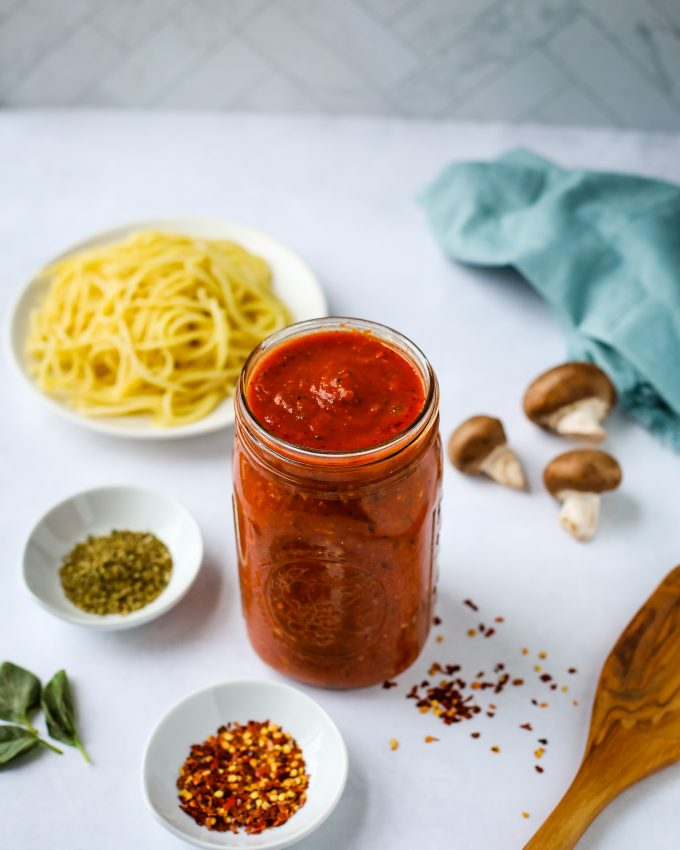

Homemade Spaghetti Sauce

Description
If Julia Child taught America how to roast chicken, Marcella Hazan taught us how to make good pasta. There's not a blockbuster movie about Marcella's life (yet), and none of her cookbooks have become best-sellers 48 years after they were first published (like Mastering The Art of French Cooking did). But pretty much everything we know about good homemade Italian food, we owe to her. However, that's not to say she's a totally traditional cook. Among her most famous recipes is tomato sauce with onion and butter, and everything about it is a little unconventional. The onion is unsauteed, the sauce simmers for less than an hour, and there's a lot of butter. It's the easiest and, most likely, best red sauce you'll ever make at home. Here's what to do:
Ingredients
- 1 (28-oz.) can whole peeled tomatoes
- 5 tbsp. butter
- 1 onion, cut in half
- 2 sprigs basil
- 2 garlic cloves, peeled and crushed
- 1/2 tsp. crushed red peppers flakes
- Kosher salt
Descriptions
- Add everything to the pot. Combine a 28-ounce can of whole peeled tomatoes, 5 tablespoons of butter, a peeled and halved onion, and a few pinches of salt.
- Simmer it. Bring tomatoes to simmer and cook for 45 minutes, breaking up the tomatoes with a wooden spoon every so often.
- Season and Serve. Season sauce to taste and discard onion before tossing with pasta. Pleeease don't be afraid of the butter. It gives this sauce a velvety richness that tastes like something only a fancy restaurant can achieve. (I realize "velvety" is an obnoxious food descriptor but it's truly the only word that works here.)
Top of the Page
Return to Home Page